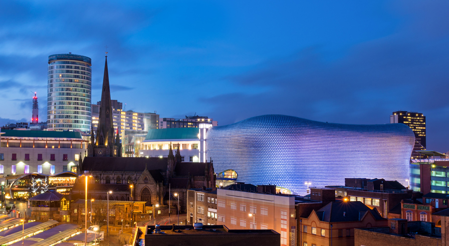
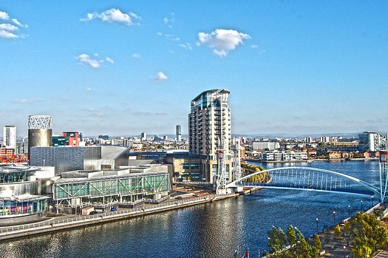
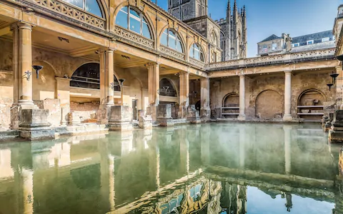

Explore the many historic musuems,the fascinating culture and
get lost within the busy city walls
get lost within the busy city walls

Having more canals than Venice, this City is a must to Visit
Voted as a green Oasis in the heart of the city,one should spend more than a day.
Voted as a green Oasis in the heart of the city,one should spend more than a day.

Whether you are a fan of football or not
Mancheser is home to two of the biggest football stadiums.
Mancheser is home to two of the biggest football stadiums.

A unique city, bath is famous for its
hot springs, Roman period baths and its beautiful Georgian architecture.
hot springs, Roman period baths and its beautiful Georgian architecture.
With its stunning Gerogian and Victorian Architecture, and winding medieval
streets, Edingburgh is not a city to miss.
Previous
Next
streets, Edingburgh is not a city to miss.